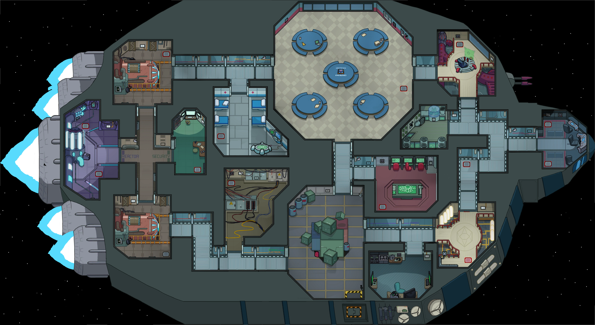

FROM LEARNING TO MOVEto learning who to trust.
CORE PHASES COMPLETE

AN INDEPENDENT RESEARCH SIM
Can a crewmate learn who to trust?
Follow the work from navigation to memory, beliefs, and the next big question: what should it do?
PROJECT COLLABORATORS
HadiRED
MasaBLACK
COMPLETE
IN PROGRESS
LATER
PARKED
Choose a lit task to begin the journey.